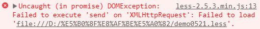

分享人：陈占乐
目录
1.背景介绍
2.知识剖析
3.常见问题
4.解决方案
5.编码实战
6.扩展思考
7.参考文献
8.更多讨论
CSS不是一种编程语言，可以用它开发网页样式，但是没法用它编程，没有自己的变量、简单的逻辑程序、函数及其他编程语法，只是一行行单纯的属性描述，写起来相当费事，而且代码难以组织和维护。
CSS预处理器用一种专门的编程语言，进行样式设计，然后编译成CSS文件，以供项目使用。 CSS预处理器为CSS增加一些编程的特性，无需考虑浏览器的兼容性问题，使用变量、简单的逻辑程序、函数等在编程语言中的一些基本特性，让CSS 更加简洁、适应性更强、可读性更佳，更易于代码的维护。
使用最为普遍的三款CSS预处理器框架分别是 SASS/SCSS（2006）、LESS（2009）和Stylus（2010）。
1 变量
2 Mixins
3 嵌套规则
4 运算及函数
5 Comments
6 Importing
1 浏览器端
2 服务器端
3 编译成静态CSS文件
less.js 在 chrome 中运行
1个警告，2个报错
[Deprecation] Synchronous XMLHttpRequest on the main thread is deprecated because of its detrimental effects to the end user's experience. For more help, check https://xhr.spec.whatwg.org/.
[弃用]在主线程上同步XMLHttpRequest已被弃用，由于它对终端用户体验的不利影响。 如需更多帮助，请查看https://xhr.spec.whatwg.org/。
Cross origin requests are only supported for protocol schemes: http, data, chrome, chrome-extension, https.
协议方案仅支持以下跨源请求：http，data，chrome，chrome-extension，https。
Uncaught (in promise) DOMException: Failed to execute 'send' on 'XMLHttpRequest'
（in promise）未捕获DOMException：无法执行'XMLHttpRequest'上的'发送'：
less.js的工作原理： 是内部先用Ajax请求less文件(遍历网页上的具有rel=stylesheet/less属性的文件)，然后按照自己的语法解析，生成对应的CSS然后加在页面中。
问题原因
解决方案
预处理器比较
参考一 LESS CSS 框架简介
参考二 less
感谢大家观看
BY : 陈占乐